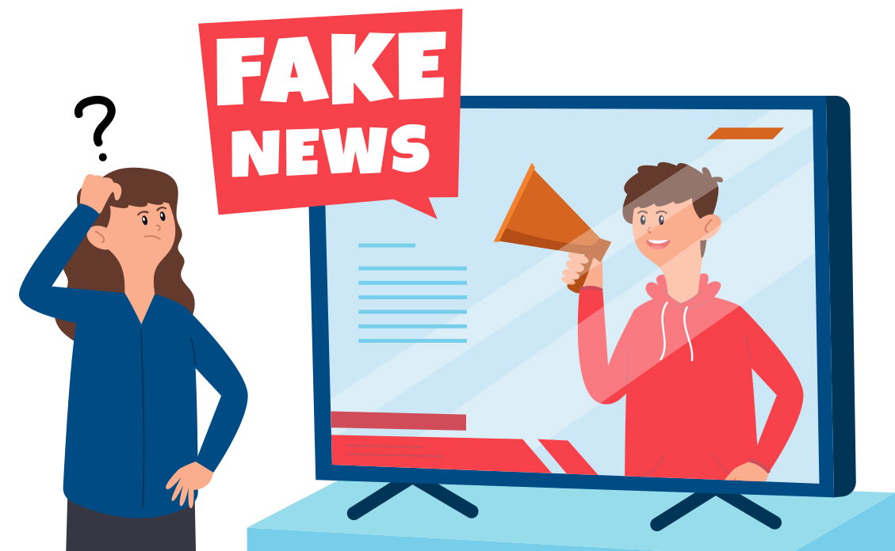

Fake News são notícias falsas publicadas por veículos de comunicação como se fossem informações reais. Esse tipo de texto, em sua maior parte, é feito e divulgado com o objetivo de legitimar um ponto de vista ou prejudicar uma pessoa ou grupo (geralmente figuras públicas).
As Fake News têm um grande poder viral, isto é, espalham-se rapidamente. As informações falsas apelam para o emocional do leitor/espectador, fazendo com que as pessoas consumam o material “noticioso” sem confirmar se é verdade seu conteúdo.
O poder de persuasão das Fake News é maior em populações com menor escolaridade e que dependem das redes sociais para obter informações. No entanto, as notícias falsas também podem alcançar pessoas com mais estudo, já que o conteúdo está comumente ligado ao viés político.
Como surgiu o termo ?
O termo Fake News ganhou força mundialmente em 2016, com a corrida presidencial dos Estados Unidos, época em que conteúdos falsos sobre a candidata Hillary Clinton foram compartilhados de forma intensa pelos eleitores de Donald Trump.
Apesar do recente uso do termo Fake News, o conceito desse tipo de conteúdo falso vem de séculos passados e não há uma data oficial de origem. A palavra “fake” também é relativamente nova no vocabulário, como afirma o Dicionário Merriam-Webster. Até o século XIX, os países de língua inglesa utilizavam o termo “false news” para denominar os boatos de grande circulação.
As Fakes News sempre estiveram presentes ao longo da história, o que mudou foi a nomenclatura, o meio utilizado para divulgação e o potencial de persuasão que o material falso adquiriu nos últimos anos.
Muito antes de o Jornalismo ser prejudicado pelas Fake News, escritores já propagavam falsas informações sobre seus desafetos por meio de comunicados e obras. Anos mais tarde, a propaganda tornou-se o veículo utilizado para espalhar dados distorcidos para a população, o que ganhou força no século XX.

Como funciona ?
A produção e veiculação de Fake News constituem um verdadeiro mercado, conforme mostra o especial do jornal Correio Braziliense (para ter acesso à matéria completa, clique aqui). Esse universo é alimentado por pessoas de grande influência, geralmente políticos em campanha eleitoral, que contratam equipes especializadas nesse tipo de conteúdo viral. Essas equipes podem ser compostas por ex-jornalistas, publicitários, profissionais de marketing, profissionais da área de tecnologia e até mesmo policiais, que garantem a segurança da sede e dos equipamentos utilizados.
Alguns produtores de Fake News compram ilegalmente os endereços de e-mail e números de telefone celular de milhões de pessoas para “disparar” o conteúdo falso. Existe a preferência por contatos de líderes religiosos ou de movimentos políticos, já que eles repassam aos seus seguidores e pedem que a informação (tida como verdadeira) seja compartilhada.
Nas redes sociais, são criados perfis falsos (com fotos, dados pessoais e publicações diárias) que começam a interagir com outras pessoas para dar veracidade. Depois, os perfis começam a espalhar notícias e vídeos de sites falsos e incentivam seus contatos a fazerem o mesmo.
Os sites que contêm as Fake News, em sua maioria, também são parte da estratégia das equipes especializadas nesse serviço. Os responsáveis pelas informações virais compram domínios de páginas e adotam uma identidade visual semelhante à do alvo (partido político, por exemplo), começam com publicações por vezes verdadeiras e, assim, atraem seu público. Com o ganho de relevância nos sites de busca, os produtores de Fake News passam a publicar informações falsas como se fossem
Os contratantes investem altos valores para que as notícias falsas sejam produzidas e veiculadas de forma sigilosa e sem deixar rastros para possíveis investigações. Existem gastos com alojamento temporário e com produtos como celulares pré-pagos e computadores, os quais são jogados fora após a produção das notícias.
Pagamentos que são feitos costumam sair de cartões recarregáveis para que não haja rastreamento. É comum a prática de utilizar o CPF das pessoas a serem difamadas para que os cartões possam ser cadastrados e utilizados. Segundo a matéria do Correio Braziliense, a tática faz com que a vítima que decida investigar a movimentação acabe chegando ao seu próprio documento, impedindo-a de continuar a procura pelos criminosos.
Para evitar a perseguição, os produtores mudam de local constantemente, assim como os profissionais de tecnologia da equipe alteram o IP (tipo de endereço do computador). O conteúdo produzido é guardado nas chamadas “nuvens”.
O alto investimento em tecnologia e a adoção de estratégias para evitar identificação de quem contrata o serviço e das pessoas que o fazem são medidas que dificultam o rastreamento dos disseminadores de Fake News. Além da dificuldade de localização dos culpados, a legislação brasileira não tem uma punição exclusiva para esse tipo de crime.